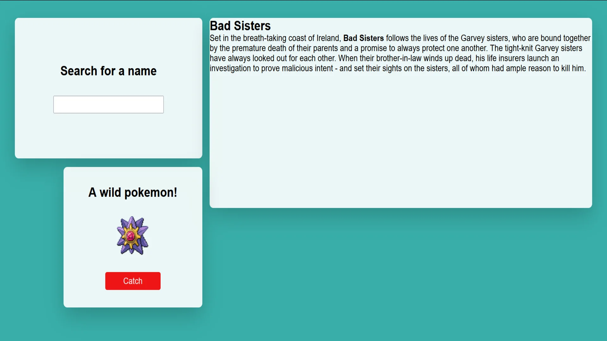

PROG HAPPINESS Html, CSS, SCSS & JS (OOP). Dit was een eindopdracht die ik maakte voor mijn front end vak. Meer uitleg
Dashboard Html, CSS & JS. Bij dit project bouwde ik een dashbaord waar je de lettertype kon aanpassen doormiddel van JS. Meer uitleg
Color picker Html, CSS, SCSS & JS (OOP). Bij dit project bouwde ik een color picker site, als je op de kleur klikte kopieerde het naar je klembord. Meer uitleg
Filter Html, CSS & jS. Bij dit project maakte ik doormiddel van js een filter systeem, dat je kan filtreren op bepaalde thema's van afbeeldingen. Meer uitleg
Modallive Html, CSS & JS. Bij dit project had ik een modallive dashboard gemaakt, je kon op elke artikel klikken en kreeg je er meer informatie over. Meer uitleg
Winkelmandje Html, css & JS Bij dit project bouwde ik een BLOG site maar daarin pikmin bloom, pokemon & Yoshi. Meer uitleg
 Dashboard Html, CSS & JS. Bij dit project bouwde ik een dashboard over Pokemon die was verbonden met een pokemon API. Meer uitleg
3D Sphere Html & CSS Bij deze project ging ik een 3D Sphere website maken doormiddel van HTML en CSS. Meer uitleg
.webp)